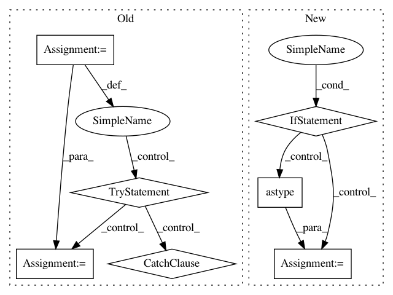

ca10c185d94470054d693f19e7691523dbe3ec55,skll/data/readers.py,NDJReader,_sub_read,#NDJReader#Any#,434
Before Change
If IDs cannot be converted to floats, and ``ids_to_floats``
is ``True``.
for example_num, line in enumerate(f):
// Remove extraneous whitespace
line = line.strip()
// If this is a comment line or a blank line, move on
if line.startswith("//") or not line:
continue
// Process good lines
example = json.loads(line)
// Convert all IDs to strings initially,
// for consistency with csv and megam formats.
curr_id = str(example.get("id",
"EXAMPLE_{}".format(example_num)))
class_name = (safe_float(example["y"],
replace_dict=self.class_map)
if "y" in example else None)
example = example["x"]
if self.ids_to_floats:
try:
curr_id = float(curr_id)
except ValueError:
raise ValueError(("You set ids_to_floats to true, but" +
" ID {} could not be converted to " +
"float").format(curr_id))
yield curr_id, class_name, example
class MegaMReader(Reader):
Reader to create a ``FeatureSet`` instance from a MegaM -fvals file.
After Change
// if it"s PY2 and `id` is in the
// data frame, make sure it"s a string
if PY2 and "id" in df:
df["id"] = df["id"].astype(str)
// convert the features to a
// list of dictionaries
features = df["x"].tolist()
return self._parse_dataframe(df,
"id" if "id" in df else None,
"y" if "y" in df else None,
In pattern: SUPERPATTERN
Frequency: 3
Non-data size: 7
Instances
Project Name: EducationalTestingService/skll
Commit Name: ca10c185d94470054d693f19e7691523dbe3ec55
Time: 2019-03-05
Author: jbiggs@ets.org
File Name: skll/data/readers.py
Class Name: NDJReader
Method Name: _sub_read
Project Name: calico/basenji
Commit Name: 28f6dbec4bee2572fa7f94445d63cebb2de6dc9b
Time: 2019-09-27
Author: drk@calicolabs.com
File Name: bin/tfr_hdf5.py
Class Name:
Method Name: read_tfr
Project Name: deeptools/HiCExplorer
Commit Name: 42dcbde0e602cba7adb911a2072df3887afd61f4
Time: 2018-03-03
Author: wolffj@informatik.uni-freiburg.de
File Name: hicexplorer/utilities.py
Class Name:
Method Name: exp_obs_matrix_lieberman